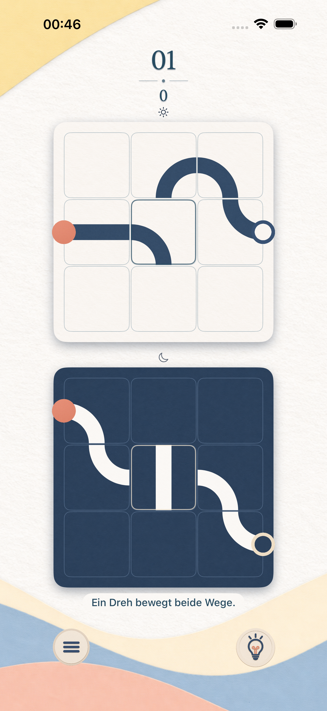

Ein ruhiges Rätselspiel für iPhone und iPad
Ein Dreh.
Zwei Wege.
Zwei Gärten sind verbunden. Drehst du einen Wegstein, bewegt sich sein Gegenüber mit. Finde den einen Gedanken, der beide Wege zusammenbringt.
Die Gärten entdeckenDie App-Store-Veröffentlichung wird vorbereitet.

- 100 Rätsel
- Vom ersten Dreh zum Aha-Moment.
- Dein Tempo
- Ausprobieren. Zurücknehmen. Weiterdenken.
- Vollständig offline
- Ohne Konto und ohne Werbung.
Zwei Seiten einer Idee
Was hier passt,
verändert auch dort.
Am Anfang siehst du beide Gärten zusammen. Später wechselst du zwischen Licht und Schatten. Die Verbindung bleibt – auch wenn du gerade nur eine Seite siehst.
Dreh einen Wegstein.
Ein Tipp dreht den Stein und seinen Partner im anderen Garten. Eine kleine Bewegung verändert zwei Wege.
Behalte beide im Blick.
Verbinde Start und Ziel auf beiden Seiten. Leuchtende Laternen und neue Steinarten geben dir mit der Zeit weitere Aufgaben.
Bring sie in Einklang.
Sind beide Wege verbunden, öffnet sich der nächste Garten. Jeder gelöste Garten zählt – auch mit Hinweisen und Umwegen.
Ein Moment für dich
Lass dir Zeit.
Die Wege warten.
Es gibt kein Zeitlimit. Nimm einen Dreh zurück, hol dir einen Hinweis oder lege eine Pause ein. Dein Fortschritt wird automatisch auf deinem Gerät gespeichert.
Eine ruhige Papierwelt, optionale leise Töne und sanfte Haptik begleiten dich. Wer eine besonders elegante Lösung sucht, kann sich an den Zugzielen versuchen.
Antworten rund ums Spiel